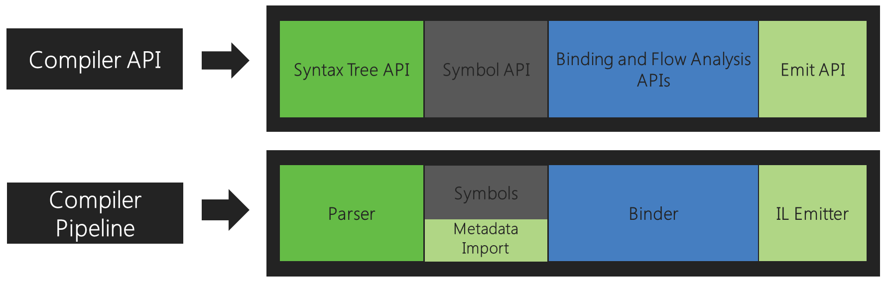
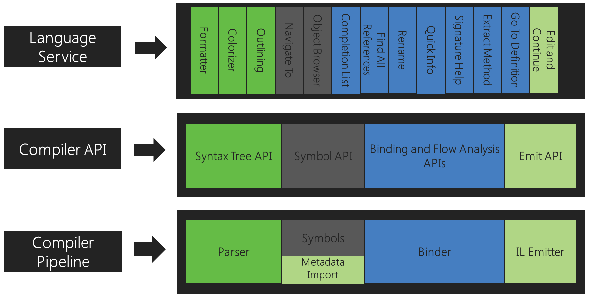
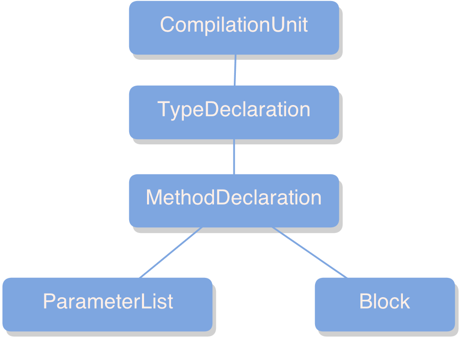
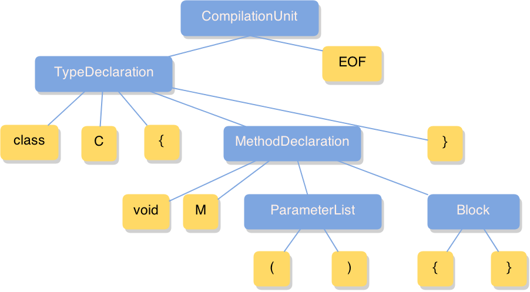
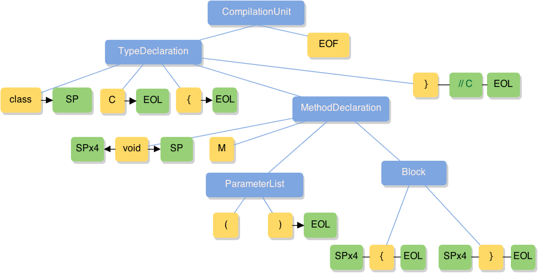
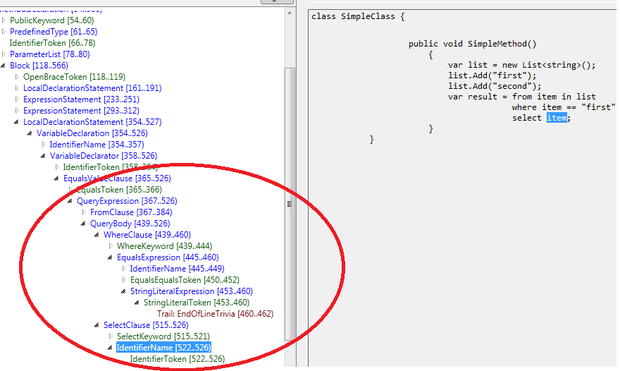

revealed by Eugene Zharkov / @2j2e
Compiler is a black box
Roslyn Team
Anders Hejlsberg - father of Microsoft's C# language.
Matt Warren - software achitect at Microsoft on the C# programming language product team.
Pete Golde - lead developer of the original Microsoft C# compiler.
Karen Ng - lead program manager on the Visual Studio Professional team.
Features
- Managed compilers (C# / VB)
- Code analysis APIs
- Language service extensibility
- Read-Eval-Print-Loop (REPL)
Compiler Pipeline

Compiler API
Language Service
Syntax Trees
- Immutable
- Resilient
- Efficient
- Complete & Consistent
Syntax Tree Code Example
class C
{
void M()
{
}
// C
}Syntax Tree - Nodes
Syntax Tree Code Example
class C
{
void M()
{
}
// C
}Syntax Tree - Tokens
Syntax Tree Code Example
class C
{
void M()
{
}
// C
}Syntax Tree - "Trivia"
Syntax Tree Code Example
class C
{
void M()
{
}
// C
}Syntax Visualizer
Workspace